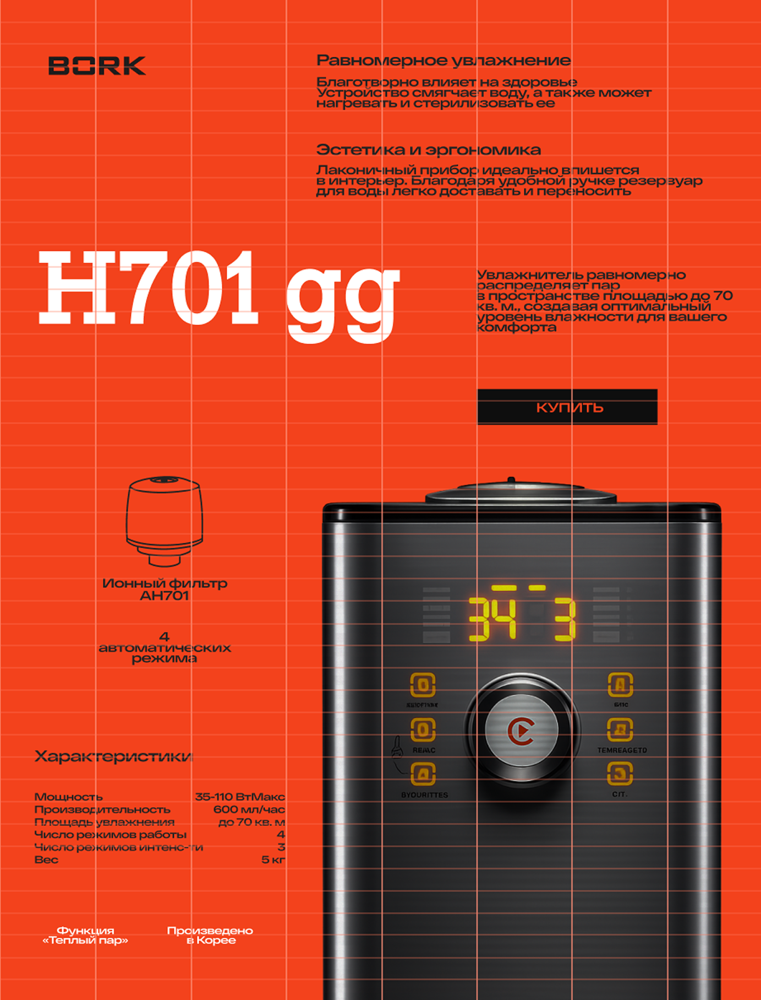

tg:@lmalinkas
Grid & 2D illustration practice
01/01Layout, module grid, vertical rhythm
Task > create a screen about Bork using the knowledge on the layout, rhythm

tg:@lmalinkas
01/01Layout, module grid, vertical rhythm
Task > create a screen about Bork using the knowledge on the layout, rhythm
